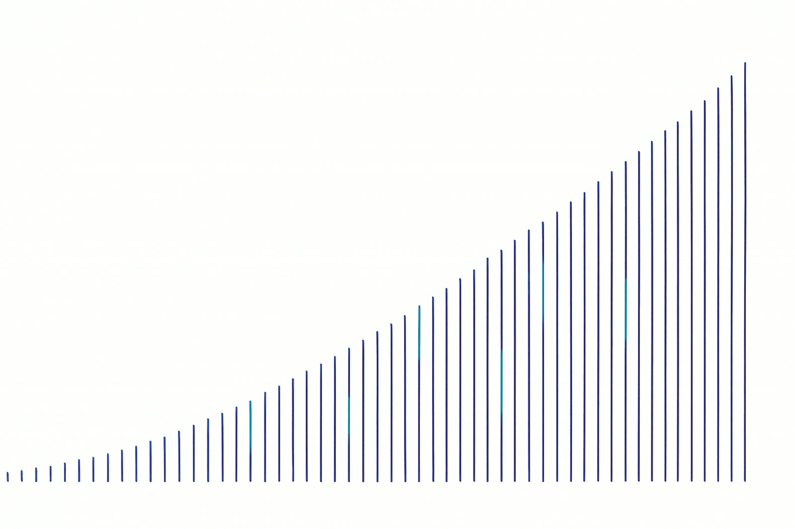

Point Ascent at your dataset and your metric. It runs literature-grounded, audit-gated experiments for days on a commodity laptop, keeps only strict improvements, and hands you a fingerprinted, one-command-reproducible bundle for every kept champion.

Every number in this pack carries its source tag. Where a figure is founder-reported or assumed, it says so at the point of use.
94,800 stars and 13,400 forks in six months; no active maintainer since 2026-03-26.A1
0 of 16 curated forks added rigor. The sustained-campaign × audit-gated quadrant has no occupant.
Removing the citation gate raised invalid experiments 42% and produced 3 leakage incidents.
Three gates run before commit. A failing experiment never enters the champion line.
BYOK puts token COGS on the user's card: 82.0% gross margin at 150 users.
$125/mo against $1,100/day of the practitioner's own time.C25